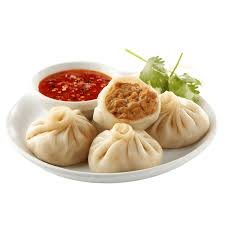

Mo-Mo

Description
Mo-Mo is one of the most popular dish in Nepal which can be eaten both as a entree or as main.
It's a dumpling filled with meat or vegetables as well. It can be eaten with tomato sauce or different
soups.
Ingredients
- 60 round wonton wrappers.
- 500g chicken mince.
- half red onion,finely chopped.
- quarter cup coriander, finely chopped.
- 2 tsp fresh minced ginger.
- 2 tsp fresh minced garlic.
- half tsp fround coriander.
- quarter tsp tumeric.
- quarter tsp ground cumin.
- 1 long Green chili, finely chopped.
- 2 tbsp veg oil or melted butter.
- Salt to taste.
- Take a big bowl.
- Put the chicken mince inside the bowl.
- Then add the freshly chopped vegetables and minced vegetables into the bowl.
- Add salt to the bowl accordingly to taste
- Then add the spices prepared earlier.
- Mix all those things in the bowl for 2 to 3 minutes.
- Take a wonton wrapper.
- Put a spoonful of the prepared mix in the wrapper.
- Laddle some oil in the extremity of wrapper by use of fingers.
- Fold the wrapper.
- Continue the process till completion of wrapping.
- Take a steamer and boil water.
- After water is boiled in pot of steamer laddle some oil in the netted part of steamer.
- Now put Mo-mo in and close the lid.
- After Mo-mo's skin is smooth not sticky it is ready to be served.
- Serve Mo-mo along with tomato chutney and enjoy.